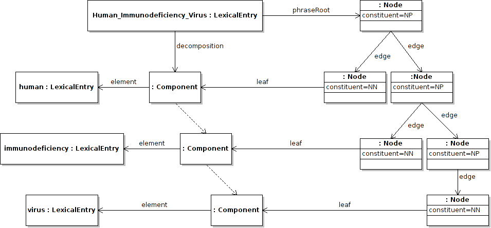
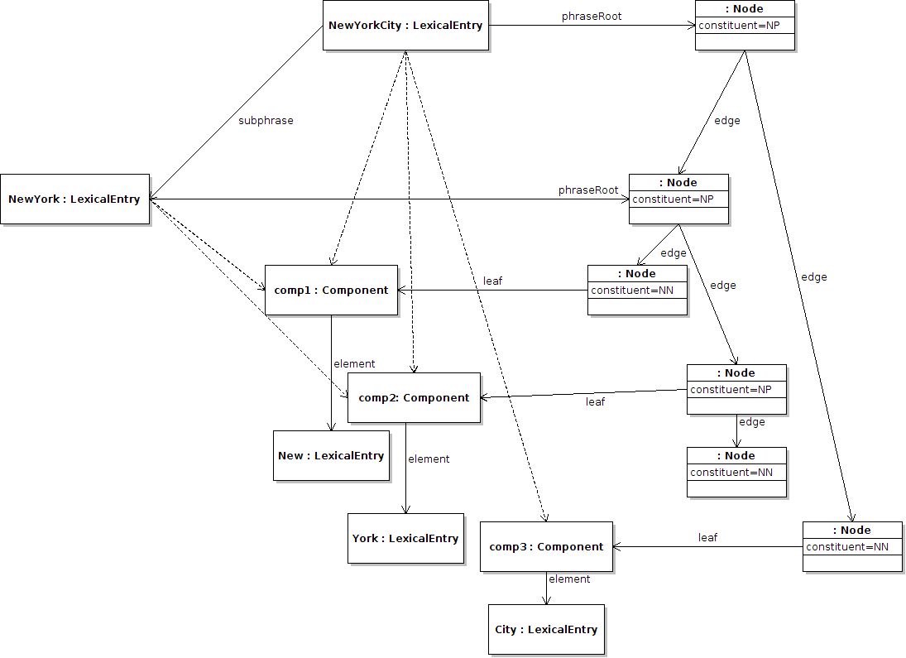

Next: Dependency relations Up: Phrase Structure Module Previous: Decomposition of terms Contents
The multi-word expression extensions of lemon are intended to model phrase structures of multi-word expressions. These are done through the use of the properties phraseRoot, edge and leaf, which allows arbitrary graphs to be created and related. For example, the decomposition of “human immunodeficiency virus” into “[human [immunodeficiency [virus]]]”, can be represented as follows.
:human_immunodeficiency_virus
lemon:decomposition ( :human_component
:immunodeficiency_component
:virus_component ) ;
lemon:phraseRoot [
lemon:edge [ lemon:leaf :human_component ] ;
lemon:edge [
lemon:edge [ lemon:leaf :immunodeficiency_component ]
lemon:edge [
lemon:edge [ lemon:leaf :virus_component ]
]
]
] .
:human_component lemon:element :human .
:immondeficiency_component lemon:element :immunodeficiency .
:virus_component lemon:element :virus .
It is important to note here that the phrase structure tree is not itself ordered, but the decomposition is, hence the order is obtained this way. It is further possible to name the arcs and nodes, by means of the property constituent. For example, we could extend the above example by denoting the (sub)phrases as follows:
:human_immunodeficiency_virus
lemon:decomposition ( :human_component
:immunodeficiency_component
:virus_component ) ;
lemon:phraseRoot [ lemon:constituent :NP ;
lemon:edge [ lemon:constituent :NN ;
lemon:leaf :human_component ] ;
lemon:edge [ lemon:constituent :NP ;
lemon:edge [ lemon:constituent :NN ;
lemon:leaf :immunodeficiency_component ] ;
lemon:edge [ lemon:constituent :NP ;
lemon:edge [ lemon:constituent :NN ;
lemon:leaf :virus_component ]
]
]
] .
:human_component lemon:element :human .
:immondeficiency_component lemon:element :immunodeficiency .
:virus_component lemon:element :virus .

Note that in the example all the constituents are marked as resources in the model. This means that there must exist some description already of the valid phrase constituents that exist for a certain grammar. Hence, for each grammar, there must be a grammar description ontology.
It is of course possible for multiple lexical entries to share the same phrase structure and this provides a more principled modelling of the decomposition than in section 1. This is as follows:
:new_york_city
lemon:decomposition ( :comp1
:comp2
:comp3 ) ;
lemon:phraseRoot [
lemon:edge :new_york_node ;
lemon:edge [ lemon:constituent :NN ;
lemon:leaf :comp3 ]
] .
:new_york
lemon:decomposition ( :comp1
:comp2 ) ;
lemon:phraseRoot :new_york_node .
:new_york_node
lemon:edge [ lemon:constituent :NN ;
lemon:leaf :comp1 ] ;
lemon:edge [ lemon:constituent :NP ;
lemon:edge [ lemon:constituent :NN ;
lemon:leaf :comp2 ] ] .
:comp1 lemon:element :new .
:comp2 lemon:element :york .
:comp3 lemon:element :city .

Here :new_york_node is reused from the ``New York City'' tree as the root of the ``New York'' tree.
John McCrae 2012-07-31